2020 — NOW
Epic Games
Senior Client Engineer / Senior Client Programmer
Joined Mediatonic as Senior Client Engineer in 2020, just before the studio's breakout hit took the world by storm.
When Epic Games acquired Mediatonic in March 2021, continued in the same role now under the Epic umbrella.
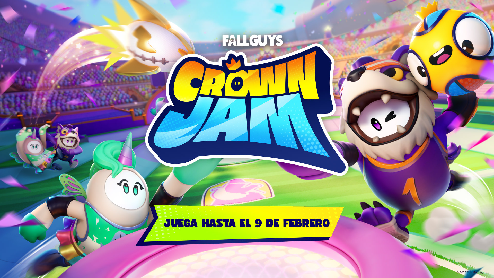
A new 3v3 multiplayer arcade sport where beans tumble and dunk in an arena packed with hazards and hype.
Gameplay programmer — abilities system and character code.

A chaotic multiplayer battle royale where up to 30 players compete through escalating obstacle courses until one winner remains.
Squads architecture, matchmaking systems, and mobile port.
Unity
C#
Unreal Engine
C++
2017 — 2019
YUMP.com
Lead Programmer · 2 años 11 meses
iOS and Android app built in Unity with augmented reality features. Step counter integrating Google Fit and Apple HealthKit SDKs. Led the technical architecture from the ground up.
Unity
C#
AR
Google Fit SDK
Apple HealthKit
Android
iOS
2010 — 2017
Pyro Studios
Game Programmer → Senior → Lead · 6 años 10 meses
Seven years at one of Spain's most iconic game studios, growing from programmer to leading the team.
A wide range of projects across mobile, PC, Facebook, and VR.
Lead Programmer
Feb 2015 — Feb 2017
Discovering Telecomunications with Mobi & Fono — educational project combining mini-games and a digital book (Unity, Android, iOS).
Evolution Planet Gold — puzzle game ported to Steam across Windows, MacOS and Linux.
Comandos Mobile — bringing the iconic franchise to mobile.
A Lunar Adventure VR — adventure game for Samsung Gear VR.
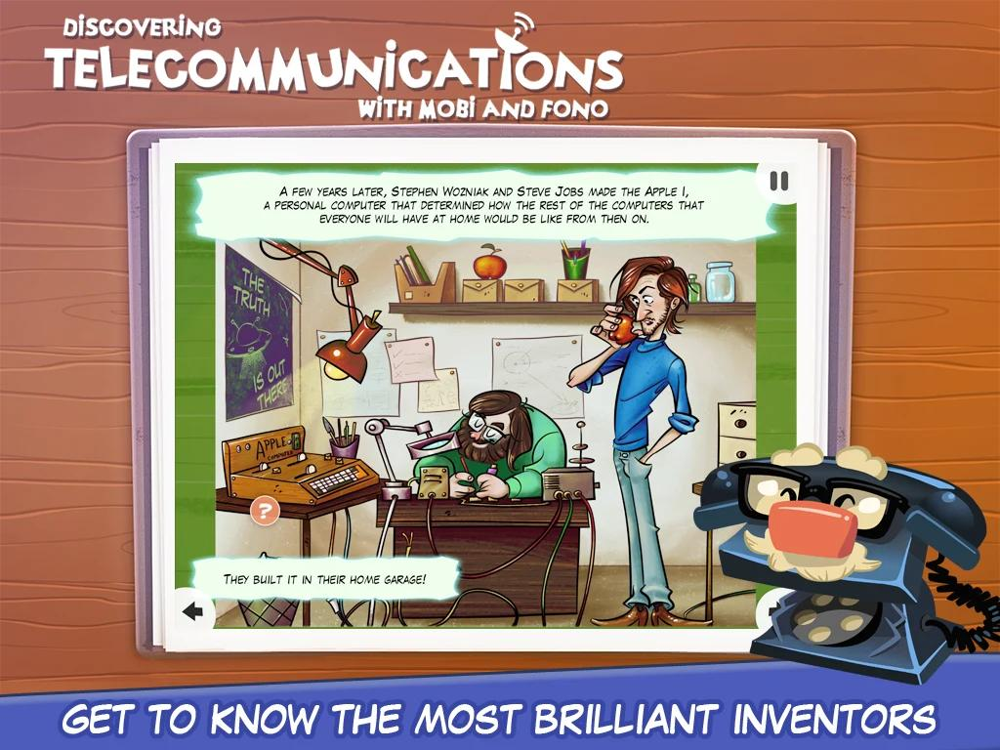
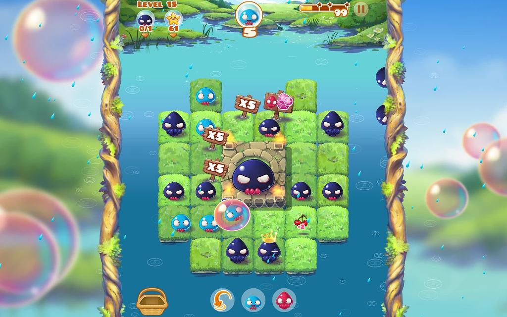
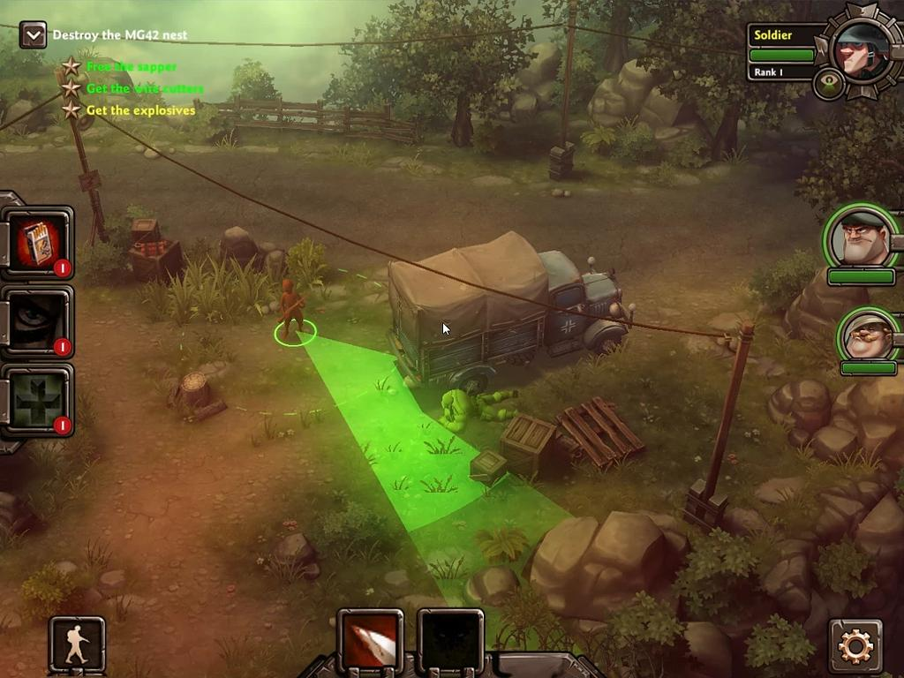
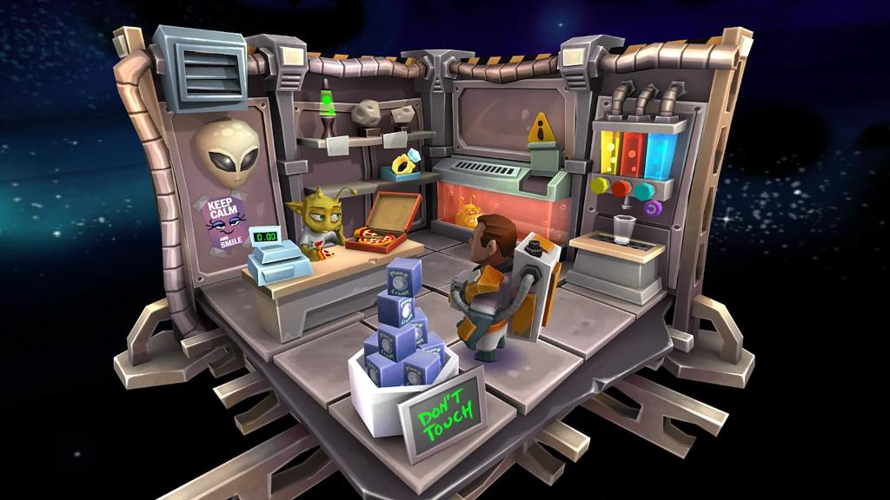
Senior Game Programmer
Feb 2014 — Feb 2015
The Comics Level — dual-purpose app acting as both a content store and a runtime engine for interactive multimedia digital comics.
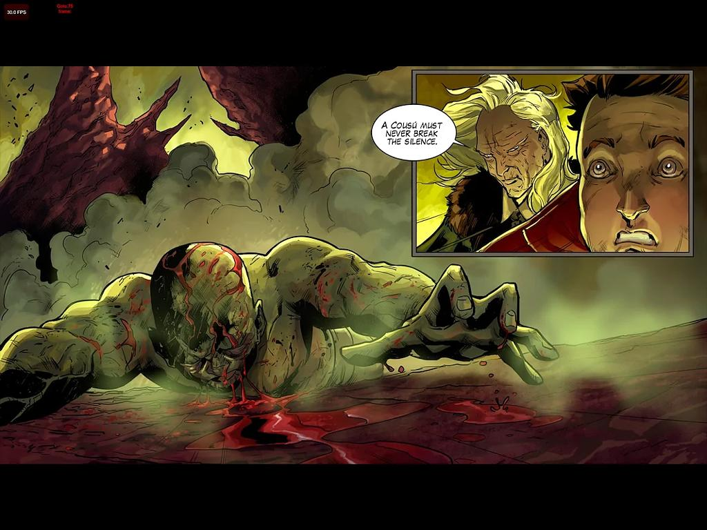
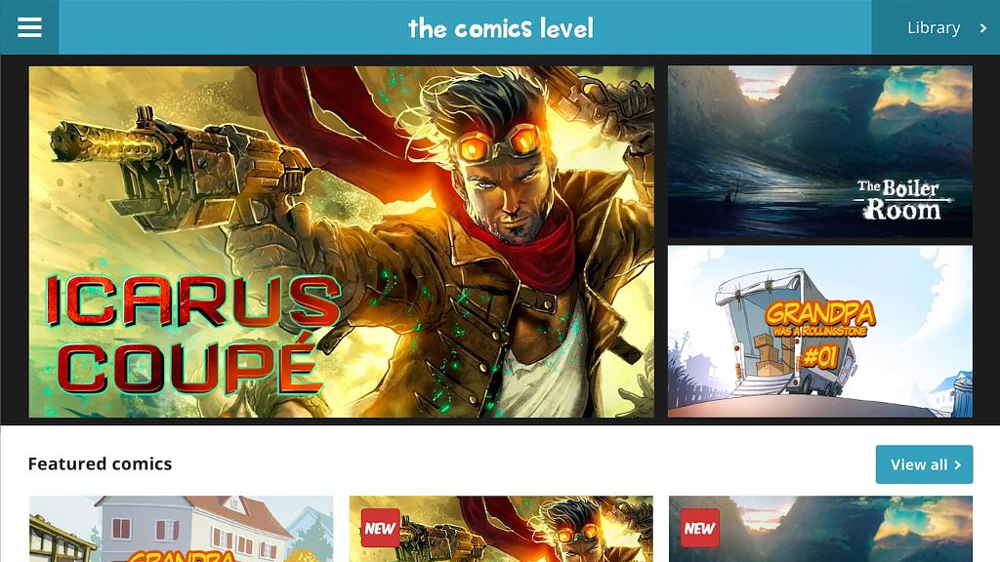
Game Programmer
May 2010 — Feb 2014
Several Facebook and mobile titles: FashionWorld, SportsCity, AdventurePark (AS3, PHP, MySQL),
and The Moleys — a puzzle game for iOS and Android built with C++ and Cocos2d-x.
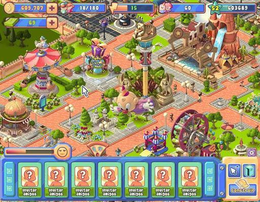
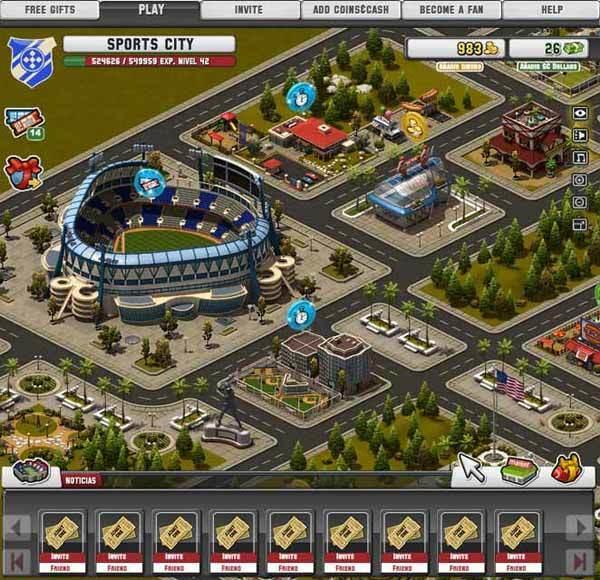
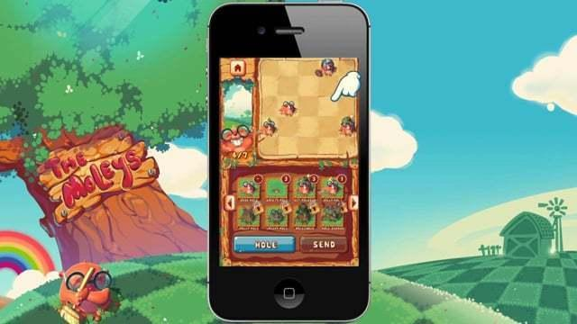
Unity
C#
C++
Cocos2d-x
AS3
PHP · MySQL
Android
iOS
Samsung Gear VR
2013 — 2014
Personal Project
Self-Published · Game Programmer
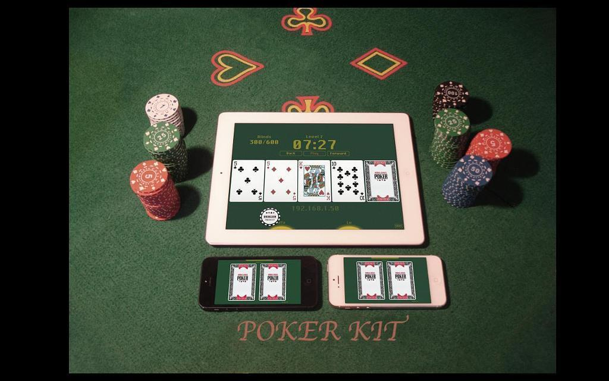
Poker Kit Dealer / Player
Self-published two companion apps: Poker Kit Dealer (server) and Poker Kit Player (client).
Together they turn any group of phones into a full Texas Hold'em table — automatic card dealing, blind counters,
all over a local multiplayer connection. Built end-to-end in Unity.
Unity
C#
Multiplayer
2006 — 2007
Damepiso S.L.
Cofounder
Co-founded an online real estate platform for buying and renting properties in Spain.
Designed and built two independent sites — one for the Canary Islands, one for Madrid.
PHP
MySQL
JavaScript
ActionScript
2009 — 2010
Máster en Desarrollo de Videojuegos
Universidad Complutense de Madrid
2002 — 2007
Licenciatura en Ingeniería Informática
Universidad Alfonso X El Sabio